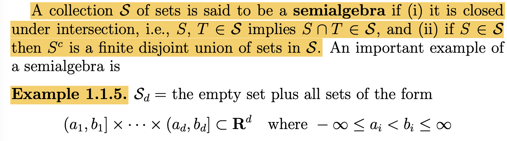
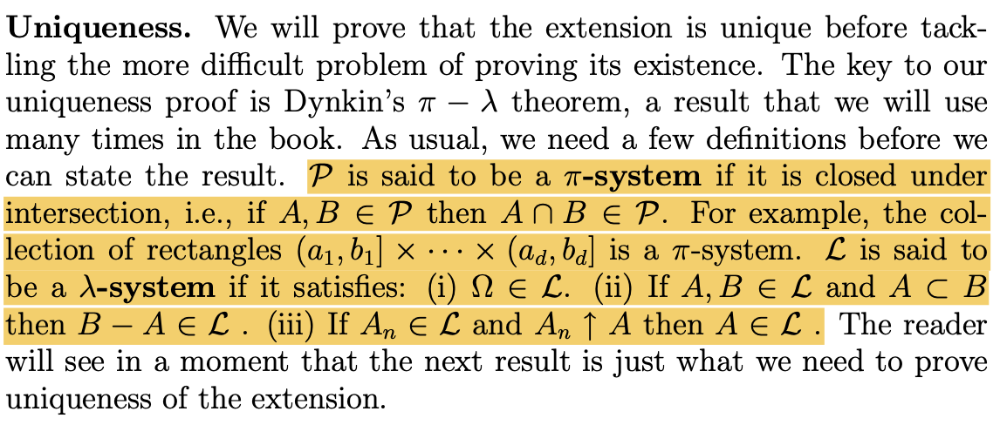

05wk: 측도론 (1)
강의영상
youtube: https://youtube.com/playlist?list=PLQqh36zP38-xOLs7lnyb8ZjM3KB-N2u7I
언젠가 필요할까?
- 이론: \(|x|<\epsilon, ~\forall \epsilon>0 ~\Leftrightarrow x=0\)
(증명)
“\(\Leftarrow\)” 자명함.
“\(\Rightarrow\)”
SUPPOSE: |x| > 0$ – 귀류법
CHOOSE: \(\epsilon=\frac{1}{2}|x|\)
\(\Rightarrow\) \(0<\frac{1}{2}|x|<|x|\)
\(\Rightarrow\) 모순
- 이론: \(|x| < \frac{1}{n},~ \forall n \in \mathbb{N} ~ \Leftrightarrow ~x=0\)
(증명)
“\(\Leftarrow\)” 자명함.
“\(\Rightarrow\)”
SUPPOSE: \(|x| > 0\) – 귀류법
CHOOSE: \(\epsilon=\frac{1}{2}|x|\)
\(\Rightarrow\) \(0<\epsilon<|x|\)
\(\Rightarrow\) \(\exists n: ~0<\frac{1}{n}<\epsilon<|x|\) (\(\because\) 아르키메데스의 성질)
\(\Rightarrow\) 모순
수학과의 표현
수학과의 기호
- 아래는 기호는 몇 가지 영어단어의 축약형이다.
- for all: \(\forall\)
- exists: \(\exists\)
- such that, satisfying: \({\sf s.t.}\), \({\sf st}\)
- if-then, implies, therefore: \(\Rightarrow\)
- if and only if: \(\Leftrightarrow\)
- because: \(\because\)
- therefore: \(\therefore\)
- quod erat: \(\square\), \(\blacksquare\)
- 예시1: 모든 실수 \(x\)에 대하여, \(x^2\)은 양수이다.
언어
- for any \(x\) in \(\mathbb{R}\), \(x^2 \geq 0\).
- for arbitrary \(x \in \mathbb{R}\), \(x^2 \geq 0\).
- for any choice of \(x \in \mathbb{R}\), \(x^2 \geq 0\).
- for all \(x \in \mathbb{R}\), \(x^2 \geq 0\).
- if \(x \in \mathbb{R}\), then \(x^2 \geq 0\).
기호
- \(\forall x \in \mathbb{R}\): \(x^2\geq 0\).
- \(\forall x \in \mathbb{R}\), \(x^2\geq 0\).
- \(x^2 \geq 0\), for all \(x \in \mathbb{R}\).
- \(x^2 \geq 0\), \(\forall x \in \mathbb{R}\).
- \(x \in \mathbb{R} \Rightarrow x^2 \geq 0\).
거의 쓰는 사람 마음임, 그런데 뉘앙스가 조금씩 다름.
- 예시2: \(\Omega\)의 임의의 부분집합 \(A\),\(B\)에 대하여, \(A=B\) 일 필요충분조건은 \(A\subset B\) 이고 \(B \subset A\) 이어야 한다.
언어
- for all \(A,B \subset \Omega\), \(A=B\) if and only if (1) \(A \subset B\) and (2) \(B \subset A\).
기호
- \(A = B \Leftrightarrow A \subset B \text{ and } B \subset A, \forall A,B \in \Omega\).
- \(A = B \Leftrightarrow \big(A \subset B \text{ and } B \subset A\big), \forall A,B \in \Omega\).
- \(\forall A,B \subset \Omega\): \(A = B \Leftrightarrow \big(A \subset B \text{ and } B \subset A\big)\)
의미가 때로는 모호할때가 있지만 눈치껏 알아먹어야 한다.
- 예시3: 임의의 양수 \(\epsilon>0\)에 대하여 \(|x| \leq \epsilon\)이라면 \(x=0\)일 수 밖에 없다.
언어
- If \(|x|< \epsilon\) for all \(\epsilon>0\), then \(x=0\).
- If \(|x|< \epsilon\), \(\forall \epsilon>0\), then \(x=0\).
- For all \(\epsilon>0\), \(|x|< \epsilon\) implies \(x=0\). – 틀린표현
기호
- \(|x| < \epsilon,~ \forall \epsilon>0 \Rightarrow x=0\)
- \(\forall \epsilon>0: |x| < \epsilon \Rightarrow x=0\) – 애매하다?
- \(\big(\forall \epsilon>0:|x| < \epsilon\big) \Rightarrow x=0\)
- \(\big(\forall \epsilon>0\big)\big(|x| < \epsilon \Rightarrow x=0\big)\) – 틀린표현
기타 약어 및 상투적인 표현
- 약어
- \({\sf WLOG}\): Without Loss Of Generality
- \({\sf WTS}\): What/Want To Show
- \({\sf iff}\): if and only if
- \({\sf Q.E.D.}\): 증명완료 (쓰지마..)
- \({\sf LHS}\): Left Hand Side
- \({\sf RHS}\): Right Hand Side
- 상투적인 표현
- It suffices to show that, It is sufficient to show that
Classes of sets
Before
- 아래의 기호를 약속
- 전체집합: \(\Omega\)
- 관심있는 집합의 모임: \({\cal A} \subset 2^{\Omega}\)
- \(\Omega \neq \emptyset\), \({\cal A} \neq \emptyset\) 를 가정.
- 약속: 집합 \({\cal A} \subset 2^{\Omega}\)에 대하여 아래와 같은 용어를 약속하자.
- \(\cap\)-closed (closed under intersection) or a \(\pi\)-system: \(\forall A,B \in {\cal A}:~ A \cap B \in {\cal A}\)
- \(\sigma\)-\(\cap\)-closed (closed under countable interserction): \(\forall \{A_i\}_{i=1}^{\infty} \subset {\cal A}:~ \cap_{i=1}^{\infty} A_i \in {\cal A}\)
- \(\cup\)-closed (closed under unions): \(\forall A,B \in {\cal A}:~ A\cup B \in {\cal A}\)
- \(\sigma\)-\(\cup\)-closed (closed under countable unois): \(\forall \{A_i\}_{i=1}^{\infty} \subset {\cal A}:~ \cup_{i=1}^{\infty}A_i \in {\cal A}\)
- ＼-closed (closed under differences): \(\forall A,B \in {\cal A}:~ A-B \in {\cal A}\)
- \(^c\)-closed (closed under complements): \(\forall A \in {\cal A}:~ A^c \in {\cal A}\)
- 우리만의 약속:
- 앞으로 서로소인 집합들에 대한 합집합은 기호로 \(\uplus\)라고 표현하겠다.
- 따라서 앞으로 \(B_1 \uplus B_2\)의 의미는 (1) \(B_1 \cup B_2\) (2) \(B_1 \cap B_2 = \emptyset\) 을 의미한다고 정의하겠다. (꼭 서로소임을 명시하지 않아도)
- \(\sigma\)-\(\uplus\)-closed 의 의미는 \(\uplus_{i=1}^{\infty}B_i \in {\cal A}, \forall \{B_i\}_{i=1}^{\infty} \subset {\cal A}:\) 의 의미이다.
- 이론: \({\cal A}\subset 2^{\Omega}\) 가 여집합에 닫혀있다면, 아래가 성립한다.
- \({\cal A}\)가 교집합1에 닫혀있음. \(\Leftrightarrow\) \({\cal A}\)가 합집합2에 닫혀있음.
- \({\cal A}\)가 가산교집합3에 닫혀있음. \(\Leftrightarrow\) \({\cal A}\)가 가산합집합4에 닫혀있음.
1 finite
2 finite
3 countable infinite
4 countable infite
(증명) 생략
- 이론: \({\cal A}\subset 2^{\Omega}\)가 차집합에 닫혀있다면, 아래가 성립한다.
- \({\cal A}\)는 교집합에 닫혀있다.
- \({\cal A}\)가 가산합집합에 닫혀있다. \(\Rightarrow\) \({\cal A}\)가 가산교집합에 닫혀있다.
- \(\forall \{A_i\} \subset {\cal A},~ \exists \{B_i\} \subset {\cal A}\) such that \(\cup_{i=1}^{\infty} A_i = \uplus_{i=1}^{\infty} B_i\).5
5 이건 차집합에 반쯤 닫혀있어도 성립함
(증명)
- Note: \(A\cap B = A-(A-B)\).
- Note: \(\cap_{i=1}^{\infty}A_i = \cap_{i=2}^{n}(A_1\cap A_i)= \cap_{i=2}^{n}(A_1 - (A_1-A_i))=A_1 - \cup_{i=2}^{n}(A_1-A_i)\).
- Note: \(\cup_{i=1}^{\infty}A_i = A_1 \uplus(A_2-A_1) \uplus \big((A_3-A_1) - A_2 \big) \uplus \big(\big((A_4-A_1)-A_2\big)-A_3\big)\uplus \cdots\)
차집합에 닫혀있다는 것은 매우 좋은 성질임.
시그마필드 (\(\star\star\star\))
- 정의: 시그마필드 (\(\sigma\)-field, \(\sigma\)-algebra)
집합 \({\cal F} \subset 2^{\Omega}\)가 아래의 조건을 만족하면 \({\cal F}\)를 \(\Omega\)에 대한 시그마필드라고 부른다.
- \(\Omega \in {\cal F}\).
- \({\cal F}\)는 여집합에 닫혀있다.
- \({\cal F}\)는 가산합집합에 닫혀있다.
- 시그마필드의 정의에서 1을 생략하기도 한다. 이럴 경우는 특별히 \({\cal F}\neq\emptyset\)임을 강조한다. 1을 생략할 수 있는 논리는 아래와 같다.
- \({\cal F}\)는 공집합이 아니므로 최소한 하나의 집합 \(A\)는 포함해야 한다. 즉 \(A \in {\cal F}\).
- 2번 원리에 의하여 \(A^c \in {\cal F}\).
- 시그마필드는 합집합에 닫혀있으므로 \(A\cup A^c \in {\cal F}\).
알지브라, 필드 (\(\star\))
- 정의1: 알지브라, 필드 (algebra, field)
집합 \({\cal A}\subset 2^{\Omega}\)가 아래의 조건을 만족하면 \({\cal A}\)를 \(\Omega\)에 대한 대수라고 부른다.
- \(\Omega \in {\cal A}\).
- \({\cal A}\)는 차집합에 닫혀있다.
- \({\cal A}\)는 합집합에 닫혀있다.
- 알지브라 역시 1의 조건을 생략하기도 한다.
- 전체집합을 포함 \(\Rightarrow\) (차집합에 닫혀있음 \(\Rightarrow\) 여집합에 닫혀있음) \(\Rightarrow\) 따라서 대수는 여집합에 닫혀있다.
- 차집합에 닫혀있음 \(\Rightarrow\) 교집합에 닫혀있게 된다.
- 혹은 (여집합에 닫혀있음 & 합집합에 닫혀있음) \(\Rightarrow\) 교집합에 닫혀있음.
- 정의2: 알지브라의 또 다른 정의
집합 \({\cal A}\subset 2^{\Omega}\)가 아래의 조건을 만족하면 \({\cal A}\)를 \(\Omega\)에 대한 대수라고 부른다.
- \(\Omega \in {\cal A}\).
- \({\cal A}\)는 교집합에 닫혀있다.
- \({\cal A}\)는 여집합에 닫혀있다.
- 여집합에 닫혀있음 \(\Rightarrow\) (합집합에 닫혀있음 \(\Leftrightarrow\) 교집합에 닫혀있음) \(\Rightarrow\) 2번 조건을 합집합으로 바꿔도 무방
- 정의3: 알지브라의 또 또 다른 정의 (교재의 정의)
집합 \({\cal A}\subset 2^{\Omega}\)가 아래의 조건을 만족하면 \({\cal A}\)를 \(\Omega\)에 대한 대수라고 부른다.
- \(\Omega \in {\cal A}\).
- \({\cal A}\)는 여집합에 닫혀있다.
- \({\cal A}\)는 합집합에 닫혀있다.
- 알지브라의 예시
- \(\Omega = \{H,T\}\), \({\cal A} = 2^\Omega\) 일때, \({\cal A}\)는 알지브라이다. (\(|\Omega| <\infty\) 이라면 “시그마필드 = 알지브라(필드)” 이다.)
링
- 정의: 링 (ring)
집합 \({\cal A}\subset 2^{\Omega}\)가 아래의 조건을 만족하면 \({\cal A}\)를 \(\Omega\)에 대한 링이라고 부른다.
- \(\emptyset \in {\cal A}\).
- \({\cal A}\)는 차집합에 닫혀있다.
- \({\cal A}\)는 합집합에 닫혀있다.
- 여기에서 1의 조건을 생략할 수 있다. (이럴경우 특별히 \({\cal A}\neq \emptyset\) 임을 강조한다.)
- \({\cal A}\)는 공집합이 아니므로 최소한 하나의 원소 \(A\)는 가져야 한다.
- 조건2에 의하여 \(A-A\) 역시 \({\cal A}\)의 원소이다.
- 링은 차집합에 닫혀있음 \(\Rightarrow\) 링은 교집합에도 닫혀있음 \(\Rightarrow\) 링은 교집합과 합집합 모두에 닫혀 있다.
- 링과 알지브라의 차이는 전체집합이 포함되느냐 마느냐임 \(\Rightarrow\) 그런데 이 차이로 인해 알지브라는 여집합에 닫혀있지만 링은 여집합에 닫혀있지 않게 된다.
시그마링
- 정의: 시그마링 (\(\sigma\)-ring)
집합 \({\cal A}\subset 2^{\Omega}\)가 아래의 조건을 만족하면 \({\cal A}\)를 \(\Omega\)에 대한 링이라고 부른다.
- \(\emptyset \in {\cal A}\).
- \({\cal A}\)는 차집합에 닫혀있다.
- \({\cal A}\)는 가산합집합에 닫혀있다.
- 여기에서 1의 조건을 생략할 수 있다.
세미알지브라 (\(\star\star\star\))
- 정의1: 세미알지브라 (semi-algebra) // ref : 위키북스
집합 \({\cal A}\subset 2^{\Omega}\)가 아래의 조건을 만족하면 \({\cal A}\)를 \(\Omega\)에 대한 세미알지브라 라고 부른다.
- \(\Omega \in {\cal A}\).
- \({\cal A}\)는 교집합에 닫혀있다.
- \(\forall A,B \in {\cal A}, \exists \{B_i\}_{i=1}^{n} \subset {\cal A}\) such that \[A-B = \uplus_{i=1}^{n} B_i.\]
3번을 \({\cal A}\)가 차집합에 반쯤 닫혀있다고 표현한다. 즉 차집합 자체가 \({\cal A}\)에 들어가는건 아니지만 차집합의 disjoint한 조각들은 모두 \({\cal A}\)에 들어간다.
- 세미알지브라는 공집합을 포함한다. (이때 \({\cal A}\neq \emptyset\)임을 강조함)
- \({\cal A}\)는 공집합이 아니므로 최소한 하나의 집합 \(A\)는 포함해야 한다. 즉 \(A \in {\cal A}\).
- \(A \in {\cal A}\)이면 조건3에 의하여 \(\emptyset\)6을 \({\cal A}\)의 원소들의 countable union으로 만들 수 있어야 한다. 이 조건을 만족하기 위해서는 \(\emptyset \in {\cal A}\)이어야만 한다.
6 \(A-A\)
- 정의2: 세미알지브라의 또 다른 정의 // ref: 세미링의 위키에서 언급, Durret의 정의.
집합 \({\cal A}\subset 2^{\Omega}\)가 아래의 조건을 만족하면 \({\cal A}\)를 \(\Omega\)에 대한 세미알지브라 라고 부른다.
- \(\Omega \in {\cal A}\)
- \({\cal A}\)는 교집합에 닫혀있다.
- \(\forall A \in {\cal A}, \exists \{B_i\}_{i=1}^{n} \subset {\cal A}\) such that \[A^c = \uplus_{i=1}^{n} B_i.\]
3번을 \({\cal A}\)가 여집합에 반쯤 닫혀있다고 표현한다. 즉 여집합 자체가 \({\cal A}\)에 들어가는건 아니지만 차집합의 disjoint한 조각들은 모두 \({\cal A}\)에 들어간다.
- 이 정의에서도 세미알지브라는 공집합을 포함한다. (이때 \({\cal A}\neq \emptyset\)임을 강조함)
- \({\cal A}\)는 공집합이 아니므로 최소한 하나의 집합 \(A\)는 포함해야 한다. 즉 \(A \in {\cal A}\).
- 3에 의하여 \(A^c=\uplus_{i=1}^{n}B_i\)를 만족하는 \(B_1,\dots, B_n\) 역시 \({\cal A}\)에 포함되어야 한다.
- 2에 의하여 \(A \cap B_1=\emptyset\) 역시 \({\cal A}\)에 포함되어야 한다.
- Note: 정의2의 3번조건은 정의1의 3번조건보다 강한 조건이다. (정의2의 조건3 \(\Rightarrow\) 정의1의 조건3)
- 증명은 세미링/위키 에서 스스로 확인
- 교재의 정의: 정의2에서 \(\Omega \in {\cal A}\)이 생략되어 있음.
- 왜 생략할 수 있는지 모르겠음. (교재가 틀렸을 수도 있음)
- 세미알지브라의 예시: 아래의 \({\cal A}\)는 모두 \(\Omega\)에 대한 세미알지브라이다.
- 예시1: \(\Omega=\{a,b,c,d\}\), \({\cal A} = \{\emptyset, \{a\},\{b,c,d\}, \Omega \}\)
- 예시2: \(\Omega=\{a,b,c,d\}\), \({\cal A} = \{\emptyset, \{a\},\{b\},\{c,d\}, \Omega \}\)
- 예시3: \(\Omega=\{a,b,c,d\}\), \({\cal A} = \{\emptyset, \{a\},\{b,c\},\{d\}, \Omega \}\)
- 예시4: \(\Omega=\{a,b,c,d\}\), \({\cal A} = \{\emptyset, \{a\},\{b\},\{c\},\{d\}, \Omega \}\)
- 예시5: \(\Omega=\{a,b,c,d\}\), \({\cal A} = \{\emptyset, \{a\},\{b\},\{c\},\{d\}, \{a,b\},\{b,c\},\Omega \}\)
세미알지브라는 전체집합이 몇개의 파티션으로 쪼개져서 원소로 들어가는 느낌이 있음.
- 세미알지브라의 예시\((\star)\): 아래의 \({\cal A}\)는 모두 \(\Omega=\mathbb{R}\)에 대한 세미알지브라이다.
- 예시1: \({\cal A} = \{(a,b]: -\infty \leq a < b \leq \infty \}\cup \{\emptyset\}\)
- 예시2: \({\cal A} = \{[a,b): -\infty \leq a < b \leq \infty \}\cup \{\emptyset\}\)
- 세미알지브라가 아닌 예시: 아래의 \({\cal A}\)는 \(\Omega=\mathbb{R}\)에 대한 세미알지브라가 아니다.
- 예시1: \({\cal A} = \{(a,b): -\infty \leq a < b \leq \infty \}\cup \{\emptyset\}\)
- 예시2: \({\cal A} = \{[a,b]: -\infty \leq a < b \leq \infty \}\cup \{\emptyset\}\)
- 교재의 언급 (p3)

세미링 \((\star\star\star)\)
- 정의: 세미링
집합 \({\cal A}\subset 2^{\Omega}\)가 아래의 조건을 만족하면 \({\cal A}\)를 \(\Omega\)에 대한 세미링이라고 부른다.
- \(\emptyset \in {\cal A}\).
- \({\cal A}\)는 교집합에 닫혀있다.
- \({\cal A}\)는 차집합에 반쯤 닫혀있다.
- 세미링에서도 공집합포함 조건을 생략할 수 있다.
- 세미링의 예시: 아래의 \({\cal A}\)는 모두 \(\Omega\)에 대한 세미링이다.
- 예시1: \(\Omega=\{a,b,c,d,e,f\}\), \({\cal A} = \{\emptyset, \{a\},\{b,c,d\}\}\)
- 예시2: \(\Omega=\{a,b,c,d,e,f\}\), \({\cal A} = \{\emptyset, \{a\},\{b\},\{c,d\}\}\)
- 예시3: \(\Omega=\{a,b,c,d,e,f\}\), \({\cal A} = \{\emptyset,\{a,b,c\},\{b,c,d\}, \{a\},\{b,c\},\{d\}\}\)
전체집합이 포함될 필요가 없는 세미알지브라 느낌임.
- 세미링의 예시: 아래의 \({\cal A}\)는 모두 \(\Omega=\mathbb{R}\)에 대한 세미링이다.
- 예시1: \({\cal A} = \{(a,b]: -\infty < a < b < \infty \}\cup \{\emptyset\}\)
- 예시2: \({\cal A} = \{[a,b): -\infty < a < b < \infty \}\cup \{\emptyset\}\)
- 세미링이 아닌 예시: 아래의 \({\cal A}\)는 \(\Omega=\mathbb{R}\)에 대한 세미링이 아니다.
- 예시1: \({\cal A} = \{(a,b): -\infty < a < b < \infty \}\cup \{\emptyset\}\)
- 예시2: \({\cal A} = \{[a,b]: -\infty < a < b < \infty \}\cup \{\emptyset\}\)
파이시스템 (\(\star\star\))
- 정의: \(\pi\)-system
집합 \({\cal A}\subset 2^{\Omega}\)가 아래의 조건을 만족하면 \({\cal A}\)를 \(\Omega\)에 대한 파이스시템 이라고 부른다.
- \({\cal A}\)는 교집합에 닫혀있다.
- 파이시스템임을 강조하기 위해서 \({\cal A}\) 대신에 \({\cal P}\) 라고 교재에서 표현하기도 한다.
- 파이시스템의 예시: 아래는 모두 \(\Omega=\mathbb{R}\)에 대한 파이시스템이다.
- 예시1: \({\cal A} = \{(a,b]: -\infty < a < b < \infty \}\)
- 예시2: \({\cal A} = \{[a,b): -\infty < a < b < \infty \}\)
- 예시3: \({\cal A} = \{(a,b): -\infty < a < b < \infty \}\)
- 예시4: \({\cal A} = \{[a,b]: -\infty < a < b < \infty \}\)
람다시스템 (\(\star\star\))
- 정의1: \(\lambda\)-system
집합 \({\cal A}\subset 2^{\Omega}\)가 아래의 조건을 만족하면 \({\cal A}\)를 \(\Omega\)에 대한 람다시스템 이라고 부른다.
- \(\Omega \in {\cal A}\)
- \(\forall A,B \in {\cal A}:~ A\subset B \Rightarrow B-A \in {\cal A}\)
- \(\forall B_1,B_2,\dots \in {\cal A}\) such that \(B_1,B_2\dots\) are disjoint: \[\uplus_{i=1}^{\infty} B_i \in {\cal A}\]
람다시스템은 1. 전체집합이 포함되고 2. 두 집합이 포함관계에 있는 경우 차집합에 닫혀있으며 3. 서로소인 가산합집합에 닫혀있다.
- 람다시스템은 여집합에 닫혀있다. 그리고 람다시스템은 공집합을 포함한다.
- 람다시스템의 느낌: 3주차 시그마필의 motivation에서 소개한 거의 모든 예제는 사실 람다시스템이다.
- 람다시스템의 원칙1,2,3은 사실 확률의 공리와 깊게 관련되어있음.
- 내 생각: 딘킨은 확률의 공리에 착안해서 람다시스템을 만들지 않았을까?
- 아래는 모두 람다시스템의 예시이다.
- \(\Omega=\{H,T\}\), \({\cal L}=\{\emptyset, \{H\},\{T\},\Omega\}\) – 3주차 예제1
- \(\Omega=\{1,2,3,4,5,6\}\), \({\cal L}=2^\Omega\) – 3주차 예제4
- \(\Omega=\{1,2,3,4,5,6\}\), \({\cal L}=\{\emptyset,\{6\},\{1,2,3,4,5\},\Omega\}\) – 3주차 예제5
- \(\Omega=\{1,2,3,4,5,6\}\), \({\cal L}=\{\emptyset,\{1,2,3\},\{3,4,5\},\Omega\}\) – 3주차 예제6
- \(\Omega=\{1,2,3,4,5,6\}\), \({\cal L}=\{\emptyset,\Omega\}\) – 3주차 예제8
- \(\Omega=\{1,2,3,4,5,6\}\), \({\cal L}=\{\emptyset,\{1\}, \{2\}, \{2,3,4\}, \{1,3,4\}, \{3,4\}, \{1,2\},\Omega\}\) – 3주차 예제9,10
- \(\Omega=(0,2\pi]\), \({\cal L}=\sigma({\cal A})\) where \({\cal A} = \{\{x\}: x\in \mathbb{Q} \cap \Omega \}\) – 3주차 예제11
- \(\Omega=\{1,2,3,4\}\), \({\cal L}=\{\emptyset, \{1,2\}, \{1,3\}, \{1,4\}, \{2,3\}, \{2,4\}, \{3,4\}, \Omega\}\) – 3주차 예제12에서 교집합 안넣은 버전
- 정의2: \(\lambda\)-system (교재의 정의)
집합 \({\cal A}\subset 2^{\Omega}\)가 아래의 조건을 만족하면 \({\cal A}\)를 \(\Omega\)에 대한 람다시스템 이라고 부른다.
- \(\Omega \in {\cal A}\)
- \(\forall A,B \in {\cal A}:~ A\subset B \Rightarrow B-A \in {\cal A}\)
- \(\forall A_1,A_2,\dots \in {\cal A}\) such that \(A_1 \subset A_2 \subset \dots\): \[\cup_{i=1}^{\infty} A_i \in {\cal A}\]
- Note: 정의1의 3번조건과 정의2의 3번조건은 서로 동치관계이다.
- 교재에서의 파이시스템, 람다시스템 설명

위의 정의에서 기호 \(A_n \uparrow A\)의 의미는 “\(A_1 \subset A_2 \subset \dots\) and \(\cup_{i}^{\infty}A_i=A\)”를 뜻하는 축약표현이다.
정리
- 정리표 (hw): 물음표를 채워라
| \(A \cap B\) | \(\emptyset\) | \(A-B\) | \(\cup_iA_i \to \uplus_i B_i\) | \(\Omega\) | \(A^c\) | \(A\cup B\) | \(\cup_{i=1}^{\infty}A_i\) | \(\uplus_{i=1}^{\infty}B_i\) | \(\cap_{i=1}^{\infty}A_i\) | |
|---|---|---|---|---|---|---|---|---|---|---|
| \(\pi\)-system | \(O\) | \(X\) | \(X\) | \(X\) | \(X\) | \(X\) | \(X\) | \(X\) | \(X\) | \(X\) |
| semi-ring | \(O\) | \(O\) | \(\Delta\) | \(O\) | \(X\) | \(X\) | \(X\) | \(X\) | \(X\) | \(X\) |
| semi-algebra | \(O\) | \(O\) | \(\Delta\) | \(O\) | \(O\) | \(\Delta\) | \(X\) | \(X\) | \(X\) | \(X\) |
| ring | \(O\) | \(O\) | \(O\) | \(O\) | \(X\) | \(X\) | \(O\) | \(X\) | \(X\) | \(X\) |
| algebra | \(O\) | \(O\) | \(O\) | \(O\) | \(O\) | \(O\) | \(O\) | \(X\) | \(X\) | \(X\) |
| \(\sigma\)-ring | \(O\) | \(O\) | \(O\) | \(O\) | \(X\) | \(X\) | \(O\) | \(O\) | \(O\) | \(O\) |
| \(\lambda\)-system | \(X\) | \(O\) | \(\Delta\)’ | \(X\) | \(O\) | \(O\) | \(X\) | \(X\) | \(O\) | \(X\) |
| \(\sigma\)-field | \(O\) | \(O\) | \(O\) | \(O\) | \(O\) | \(O\) | \(O\) | \(O\) | \(O\) | \(O\) |
- 다이어그램 (포함관계)
- 다이어그램 (이해용) – 그림은 더럽지만..